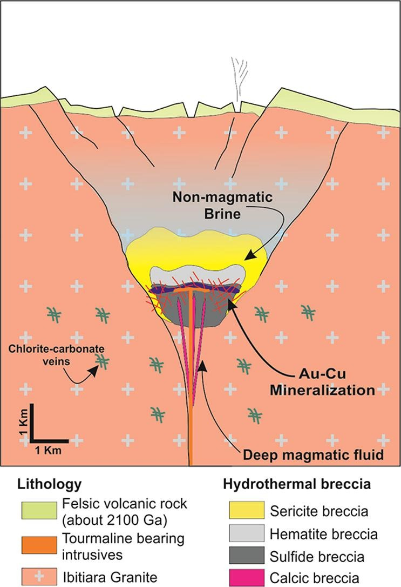

Metallogenesis of the Rhyacian Lavra Velha gold-rich IOCG deposit in the São Francisco Craton, Brazil

Resumo em Português
Lavra Velha é um depósito IOCG Riaciano recentemente descoberto na porção norte do Cráton São Francisco, no estado da Bahia, NE do Brasil. A mineralização de ouro e cobre é hospedada por brechas hidrotermais epigenéticas com grandes quantidades de óxido de ferro. Múltiplas fases de formação de brechas e alteração hidrotermal causaram uma zonação da base ao topo do depósito. A alteração é caracterizada principalmente pelos estilos calcita-epidoto-magnetita, turmalina-clorita-magnetita e sericita-hematita hidrotermais.A química de turmalina e clorita indica que fluidos alcalinos de baixa temperatura apresentaram conteúdos variáveis de Fe²⁺, Mg, Al e Na ao longo da evolução do complexo de brechas. Magnetita e hematita exibem baixo conteúdo de vanádio (≤0,24% em peso) e teor muito baixo de titânio (≤0,06% em peso). Os minerais sulfetados são pirita (com até ~3% em peso de Co), calcopirita, bornita, arsenopirita e covelita, em ordem decrescente de abundância. Muscovita grossa relacionada aos estágios mais tardios da breccia apresenta alto conteúdo de bário, com média ≥1,27% em peso. As composições isotópicas de carbono e oxigênio na calcita da breccia cálcica indicam que os fluidos mineralizantes precoces foram derivados de um reservatório misto magmático/não magmático (δ¹³C ~−2‰ e δ¹⁸O de 9,95 a 13,09‰ na calcita). As composições isotópicas de enxofre de calcopirita e pirita demonstram que o enxofre na breccia mineralizada foi derivado de magmas em resfriamento que sofreram fraca contaminação por fluidos oxidados ou rochas encaixantes (δ³⁴S de 2,22 a 3,89‰).Novas idades U-Pb em zircão indicam que a mineralização ocorreu em aproximadamente 2100 Ma, coeval com diques de granito porfirítico portadores de turmalina com idades de 2098 ± 8 e 2112 ± 12 Ma. Apesar de ser considerado um depósito pequeno em relação às reservas conhecidas, Lavra Velha pode ser o primeiro depósito IOCG reconhecido no Cráton São Francisco, particularmente no Bloco Gavião, representando um importante indicador para futuras explorações de metais preciosos e de base no Cráton São Francisco.